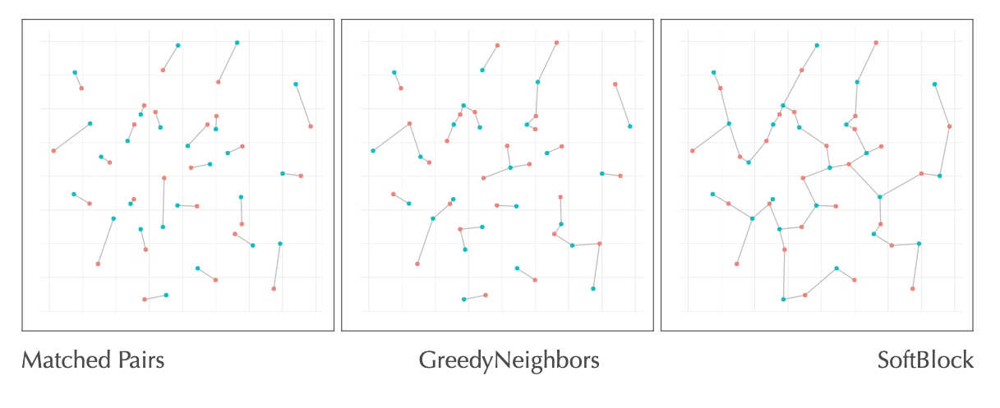

I continue my long search for a way to generate a nicely formatted website with publication list based on adding publication information to a single source of truth without re-remembering how all the formatting works each time.

In this demo, I’m going to walk through an example experimental design using methods from our recent paper on Balanced Design.